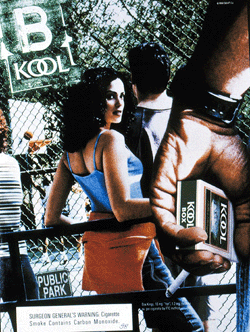
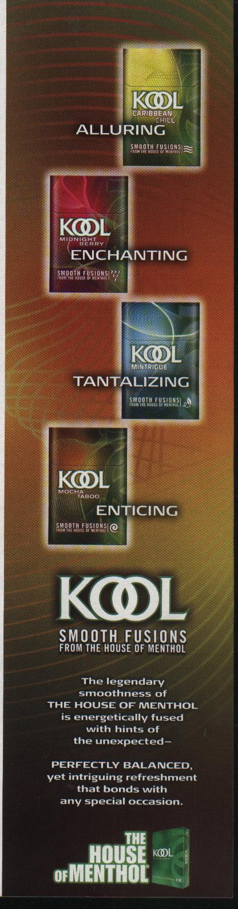
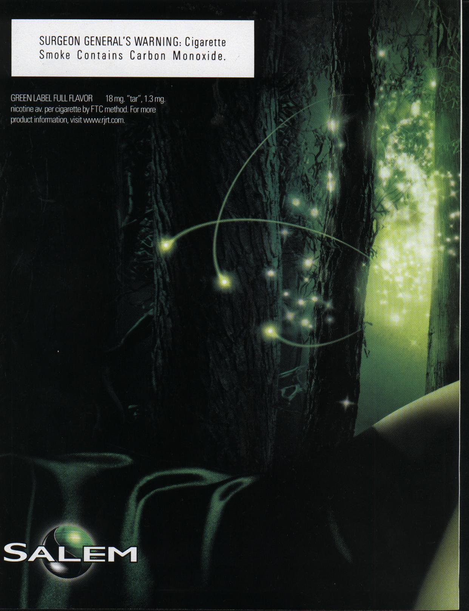
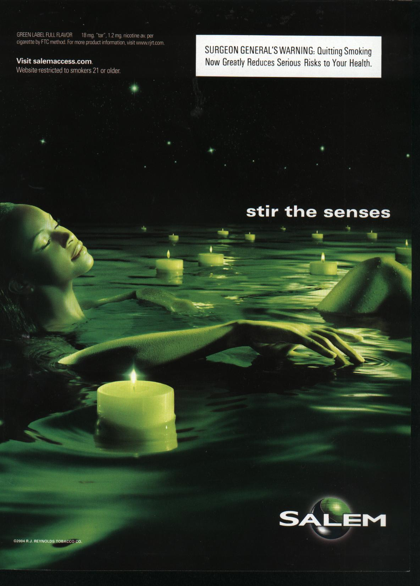

In order to survive, tobacco manufacturers need to continue to recruit new cigarette smokers. The Master Settlement Agreement (MSA)created a $246 billion financial burden on the major tobacco companies forcing them to almost immediately to raise prices. To the surprise of most observers, discount cigarette makers swarmed into the market selling cigarettes at or below prices available before the settlement. Older established smokers quickly gave up their loyality to their special brands for the cheaper discount brands. Others smokers were quitting as a result of developing a life-threatening tobacco-attributable chronic disease or had died a premature death as a result of a tobacco smoking. It has been established that the majority of new cigarette smokers start smoking before the age of 18. But the MSA forbade tobacco manufacturers from directly or indirectly targeting youth in their promotional practices. We investigate the approach that Brown & Williamson took with their primary money maker - Kool to make sure the company would survive. The reader should read the information presented and decide for himself or herself as to whether or not cigarette makers are targeting our Future - the Youth of America.

Advertising - Impossible to Limit Exposure
It's a known fact cigarette advertising and promotional items do appear to play a role in an adolescent's or
teenager's decision to begin smoking (JAMA 279: 516-520, 511-515, 1998).
Tobacco companies keep on insisting that they are not targeting youngsters (those younger than 18 or 19 (in some states)) to smoke and it hard to demonstrate intent on the part of cigarettes manufacturers. Trends in smoking among young people follow those of adults. Boys see men smoking and want to do the same-- and the same can be seen with girls and women smokers. Cigarette advertising links smoking with being "cool", taking risks and growing up (http://www.infact.org/youth.html).
The Master Settlement Agreement (MSA - November 1998 - to recover tobacco-related health care costs) with the tobacco industry appears to have had little effect on cigarette advertising in magazines and on the exposure of young people to these advertisements (King and Siegel, NEJM 345(7): 504-511, 2001). The primary focus of MSA was for prohibiting youth-targeting in advertising, marketing and promotions--commitment to reducing youth access and consumption. (Not to take any action, directly or indirectly, but to prevent targeting youth in tobacco company advertising or marketing; still tobacco companies are finding ways to reach kids with a message to smoke.
The agreement prohibits tobacco advertising that targets people younger than 18 years of age. According to the FDA a magazine is youth oriented if more than 15% of the readers were between 12 to 17 years old or more than two million of their readers were 12 to 17 years old (Fed Register Aug 28, 1996 44446-44496). Cigarette advertising expenditures in magazines with more than 15% youth readership increased $30 million after the MSA (Cigarette Advertising Expenditures Before and After the Master Settlement Agreement: Preliminary Findings, Turner-Bowker and Hamilton, May 15, 2000).
It is true that by seemingly targeting adults (especially young adults 18 to 24 years) tobacco companies know that kids will get the message that it is cool and sophisticated to smoke. The tobacco companies continue to try to hook new generations of customers on their tobacco products because they need to do that for the very survival of their industry (Dr. Dileep Bal, President of the American Cancer Society).
Let's take a look at the activities of Brown and Williamson in promoting their key money maker - Kool - after the signing of the Master Settlement Agreement (MSA) of November 23, 1989 between the Attorneys General of 46 states (and five U.S. territories) and the major tobacco companies. (Four states (Florida, Minnesota, Mississippi and Texas) had previously settled with tobacco manufacturers for $40 billion.)
The Need to Encourage Young People to Smoke
The Master Settlement Agreement (MSA - November 1998) put a heavy burden on large tobacco companies. The states and public
health advocates expected the sheer size of the settlement--a combined $246 billion over 25 years--to discourage
smoking by forcing large tobacco companies to raise prices. It was not anticipated that in response to the settlement
upstart discount cigarette makers swarmed into the market selling cigarettes at or below prices available before the
settlement.
Brown & Williamson fared the worst among the major tobacco companies. It's sales in the fourth quarter of 2000 were 35% lower than the 3rd quarter of 1998, just before the settlement was signed. The main reason for this downward trend was because the smokers of Brown & Williamson brands Kool, Lucky Strike, Viceroy, GPC and Carlton tend to be older and more likely to quit (or die from a tobacco attributable disease?) or trade down to cheaper cigarettes. The young smoker base had all but disappeared. "We've really been hit ," said Susan Ivey, the then Chairman and CEO of Brown & Williamson. "We've certainly had consumers trade down to those lower-priced options." (Mrs. Ivey assumed this position January 2001 after returning from working at BAT (British American Tobacco)--the former parent of Brown & Williamson--to return to Louisville to be Senior VP for Marketing in the middle of 1999.)
Ivey was tapped to help the company recover. She was considered the savior to stop the steady decline in cigarette sales. People felt Ivey could breath a renewed outlook into a business that was faltering.
The company tried to counteract the bad years by streamlining operations becoming lean and mean and more effective. Ivey indicated that we faced a decline in market share and profitability and we were forced to take a close look at who we were, how we got where we were and where we were going.
The focus was on rebuilding its key brands especially Kool which is the largest contributor to company revenue, volume and profits. Because of that, the company couldn't stand by and watch as market share continued to deteriorate said Mrs. Ivey.
Part of the strategy was to see how Brown & Williamson could enhance the Kool brand to smokers ages 21 and 30 The Kool brand had lost leadership in the menthol category, since primarily it has been unable to attract customers in their 20s and 30s while many of its faithful older buyers are no longer around. B&W; needed a plan for Kool again to appeal to younger adult smokers who tend to be most loyal and least sensitive to rising prices of smokes.
They needed to come up with a strategy that was capable of turning things around, but caution had to be exercised because B&W; wanted to be a responsible commercial organization. Yet their profitability depended on the sales of cigarettes to young adult smoker.
(Brown & Williamson does provide funding for the development and implementation of programs aimed at reducing young people's motivation to smoke. Currently the company supports the youth smoking prevention activities of some 15 community organizations. It has been found that tobacco industry youth programs do more harm than good for tobacco control (Landman et al., Am J Pub Health 92(6): 917-930, 2002).
So, the purpose of our marketing activities appears to persuade existing adult smokers to smoke the Kool brand. But it is obvious by implementing campaigns to regain market share with young adult smokers, they are influencing youngster to smoke.
Mrs. Ivey commented on the marketing strategy to regain market share for Kool - "It's a guerilla
warfare approach." When Senior Vice President for Marketing (Monday, July 23, 2000.).
Click for a brief biography of Mrs. Trevor Ivey.
Strategy to Win Over Young Smokers
Ludo Cremers , Brown &Williamson;'s divisional VP brand marketing, indicated that although demographics show that Kool smokers are a diverse group - 50% Caucasian, 40% African American, 10% Hispanic - the advertising will be aimed at a hip, urban audience.
Ivey's strategy seemed to be working, the slide of Kool was stabilized and the Kool brand family actually increased to 2.95% in 2003 from 2.88% in 2002. (R. Covino, The Brawny Brands, Tobacco Outlet Business July/August 7(4): 2004). With this good news the decision must have been made to heighten the marketing effort regardless of the consequences to attract young smokers and convince them it's "Time to step into the house" - The House of Menthol.
The material was promoted widely and included an emcee competition where poets in hip-hop rap about history, culture and politics to a rhythm and beat. (Brown and Williamson Corp. press release, Kool Celebrates Hip-Hop Culture With Year-Long Events, March 17, 2004)
Smooth Fusions -in March (3/19/04) straight from the House of Menthol, Kool introduced the Smooth Fusion Promotion, four new menthol experiences that fused the legendary smoothness of Kool with unexpected flavors and a revolutionary pack design. According to Ludo Cremers , Brown & Williamson's divisional VP brand marketing, "Kool established the menthol category and continues to reinvent it to give consumers a product that fits the lifestyle of today's urban, multicultural smokers. The new Kool Smooth Fusions cigarettes are perfectly balanced, yet deliver intriguing refreshment with a taste that bonds with any special occasion."
The four Kool Smooth Fusions are Caribbean Chill, Midnight Berry, Mocha Taboo and Minitrigue. According to Cremers, "Each style evidences Kool expertise in menthol and its ability to masterfully craft perfectly balanced, unique and distinct menthol experiences. The Smooth Fusions styles each provide a truly extraordinary and innovative menthol smoking experience demanded by the leading edge lifestyle of today's menthol smoker." Again, tobacco makers claim those flavors are aimed at adults who like flavors. Their research tells them that adults have gone to flavors as part of a market trend, e.g., you have lemon and cherry vodka. Maybe Brown & Williamson with Kool are using flavored cigarettes to draw children who are not used to the taste (more difficult taste to adjust to) of regular cigarettes. Sherri Watson Hyde, executive director of the National African American Tobacco Prevention Network, has stated that the names of these cigarettes sound like funky juices or coffee drinks using these flavors to lure youngsters into a lifetime of smoking.
According to Ludo Cremers, divisional vice president, "Kool is truly on the cutting edge of menthol technology. Kool established the menthol category and continues to reinvent it to give consumers a product that fits the lifestyle of today's urban, multicultural smokers." (R. Covino, The Brawny Brands, Tobaco Outlet Business July/August 7(4): 2004). Images of Smooth Fusion related Tobacco Ads that appeared in the magazine Blender - the so called ultimate music magazine.
Salem - a menthol cigarette that was never very appealing to young smokers had to also change its image in order prevent further erosion of market share. The re-launch of Salem began in early 2003 and it was felt the "Stir the Senses" campaign established a unqiue and relevant positioning. Salem markets two unique tastes: Salem Green Label, with a lighter menthol taste and Salem Black Label, with a richer menthol-and-tobacco taste. Also - there's a limited distribution Silver Label available in Cool Myst, Fire & Ice, Dark Currents and Deep Freeze. There's also a "Stir the Senses" tour visiting approximately 15 cities.
|  |  | |||||
|
Essence August 2003 |
Essence June 2004 |
Stuff 2003 | Rolling Stone August 19, 2004 | *Sports Illustrated August 30, 2004 | FHM Sept 2004 | |
What has to be Done
The main goal of cigarette ads is obviously to get young smokers
to smoke but often turns out that young people
are the target audience. Despite publicly agreeing not to advertise
to youth, it seems like tobacco companies
in order to survive can't stop looking for young new customers.
Just when you think you have them down - like
the downward decline of Brown & Williamson after the MSA - a new scheme to
get things in the black is unveiled.
Susan Ivey the new President and CEO of Reynolds American, Inc. probably got this position because her strategy turned around the steady decline of Brown & Williamson.
But at what expense did this occur. We're sure Mrs. Ivey would be the first to tell you their advertisements are not intended to target youths. But as Dr. Siegel points out, "from a public health perspective, which matters is whether adolescents are exposed to cigarette advertising that leads to begin smoking, whether that exposure was intentional or not." Black youths are more likely than white youths to be exposed to magazine advertising by cigarette brands popular among black adolescents (King et al., Tob Control 9(1):64-70, 2000).
More than 80% of adult smokers started before they turned 18 and by that time more than half of them were already smoking daily. Tobacco companies need some indirect way to get the word out to youngsters. Kool promotions try to entice the potential Kool smoker inviting them to the House of Menthol, a place of "alluring" and "tantalizing" Smooth Fusion flavors.
Young people, easily swayed, vastly underestimate the addictiveness of nicotine and think they won't be smoking in 5-years - nearly 75% are still smoking 5 to 6 yrs later. 75% of adolescent smokers wish they had never started in the first place. The tobacco industry has exploited the fact that adolescents are not in a position to make an informed and rational choice about smoking (Cummings et al., Tob Control 11: i5-i17, 2002).
According to the Health & Human Services Secretary Tommy Thompson smoking represents one of the greatest challenges to health, both in the United States and worldwide. African Americans continue to suffer disproportionately from chronic and preventable disease compared with white Americans (SG Report 1998). Approximately 3 of every 4 African Americans smokers prefer mentholated cigarettes - this is even higher for teens. The former Surgeon General David Satcher said, "The advertising campaigns luring minorities to smoke masks a more sinister reality: CDC statistics show 45,000 blacks die of smoking-related illnesses every year...African-Americans bear the greatest burden of cigarette smoking...And menthols may be starter cigarettes because of the minty flavor and the throat-warming effect."
Once and for all, we have to eliminate this continued scheming by tobacco companies. Let's eliminate all tobacco product advertising except in locations where only adults frequent. Even in these locations the advertising should face inside and not outside where passers by can view. We must also keep in mind the advertisements for smokeless tobacco.
The American Legacy Foundation (created as a result of the MSA) whose purpose is to combat tobacco use in the United States especially among the youth of America. Legacy funded in April 2004 the creation of the "African American Partners for a Tobacco Free Society." One of the first priorities for this group should be to apply pressure to the publishers of black oriented magazines (e.g. Essence, Ebony) not to accept advertisements from tobacco companies.
Brown & Williamson is facing litigation from more than two dozen states which claims the company is marketing Kool cigarettes to youth.
It will be interesting to see the marketing strategy, to be announced around the first of the year, that will be followed now that both Salem and Kool are marketed by the same company. Hopefully they'll change their various promotions to truly target adult smokers.
But again - this just can't happen - in order to survive tobacco companies have to constantly seek out new smokers. Even though there's a very strong likelihood tobacco use can lead to long drawn out suffering and eventual premature death.
{kind=link}
{kind=link}